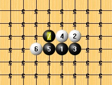

偶得
首页
五子棋交流
#1 偶得 作者：屏蔽 发表时间：2012-10-20 13:03:23
秦时明月汉时关，
万里长征人未还。
但使龙城飞将在，
不教胡马度阴山。

 w7w.rar
w7w.rar ［ 雨过云舒 于 2012-10-20 14:54:30 时花20金币送鲜花一朵］
［ 山城刀客 于 2012-10-20 23:27:59 时花20金币送鲜花一朵］
［ 山城刀客 于 2012-10-20 23:27:59 时花20金币送鲜花一朵］
［ 山城刀客 于 2012-10-20 23:27:59 时花20金币送鲜花一朵］
［ 山城刀客 于 2012-10-20 23:27:59 时花20金币送鲜花一朵］
［ 山城刀客 于 2012-10-20 23:27:59 时花20金币送鲜花一朵］
#2 Re:偶得 作者：自来水 发表时间：2012-10-20 13:54:43
这诗歌是干什么...
［此帖子已被 自来水 在 2012-10-20 13:57:30 编辑过］
#3 Re:偶得 作者：屏蔽 发表时间：2012-10-20 14:01:36
王昌龄《出塞》
#4 Re:偶得 作者：自来水 发表时间：2012-10-20 15:52:49

然后就想起了这个，讲解在贴吧，懒得发过来了
http://tieba.baidu.com/p/1933325643
#5 Re:偶得 作者：屏蔽 发表时间：2012-10-20 16:27:18
w7w2.rar
我来给楼上补谱。
#6 Re:偶得 作者：一期一会 发表时间：2012-10-20 22:49:37
7手出塞后，8落1手下面感觉是最强防，不知对否……
#7 Re:偶得 作者：屏蔽 发表时间：2012-10-20 22:59:08
难者不会会者不难 拆的时候5下面两格也不简单。
#8 Re:偶得 作者：岑小鱼 发表时间：2012-10-25 21:56:40
1楼的拆过，4楼的没拆..
#9 Re:偶得 作者：徐来 发表时间：2012-10-26 4:31:09
马蹄难走人北望 起唱~